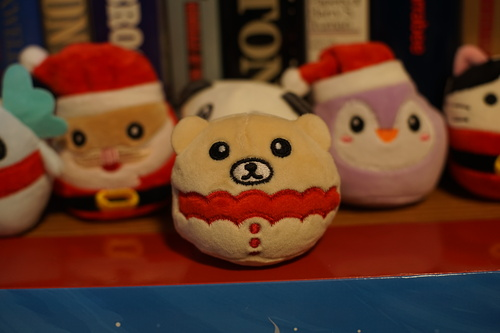

You found...
Here you are! One sketchbook scan, coming up!
Linus and I (mostly Linus) looked into scanners during the great scramble for artist trading card prints of October 2025. He found out most people are "scanning" with their camera.
I hate doing this because of uneven lighting. Today the sun twinkled in very cutely through the trees, but it made a shadow pattern on my images. I'm constantly having to readjust the page to get it straight on in the frame. This was truly a terrible experience before I started using my tripod.
I'm manually cropping the images. I'd like to use imagemagick to automate it, but the page isn't consistent within the frame ;_; ANYWAY, scanners are still useful in 2025!
Bear!!! I love bears! This is my favorite so far.